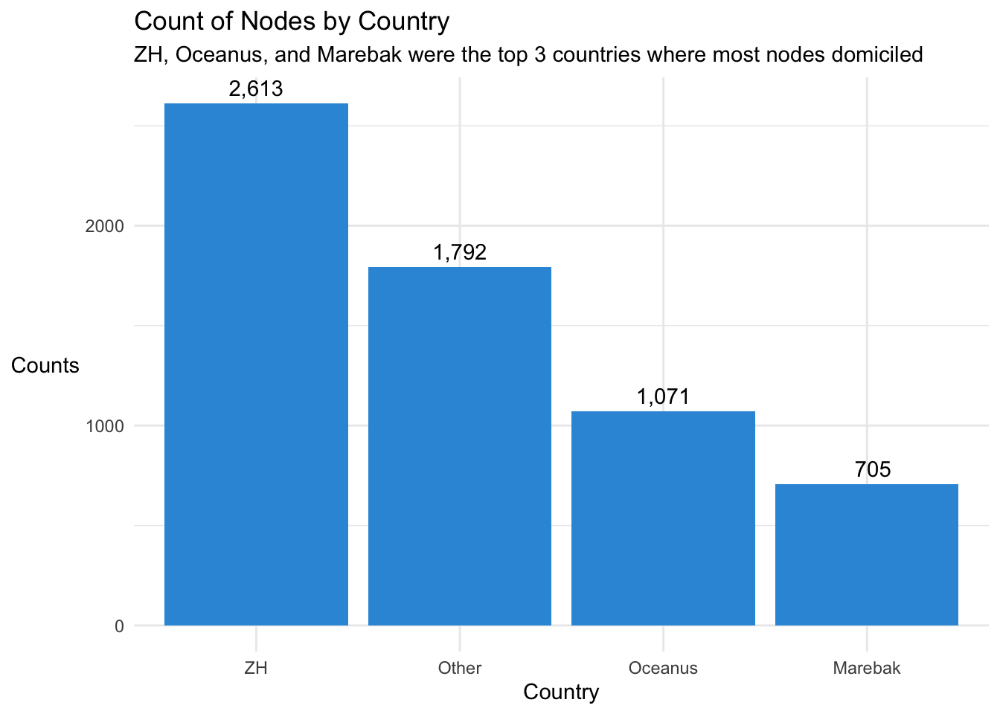
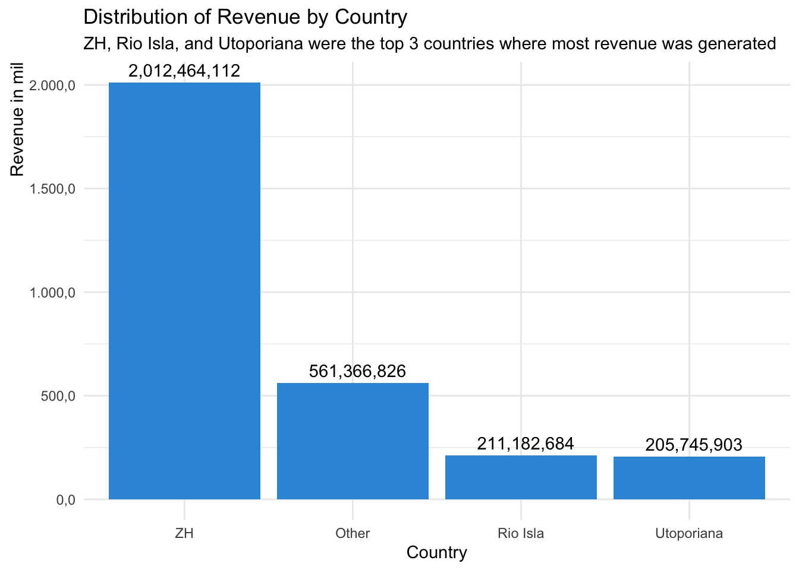
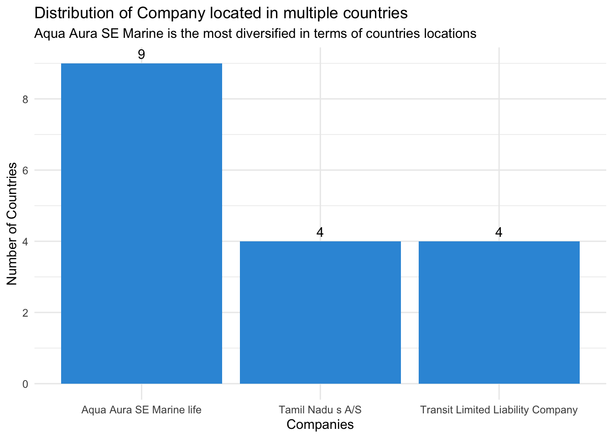
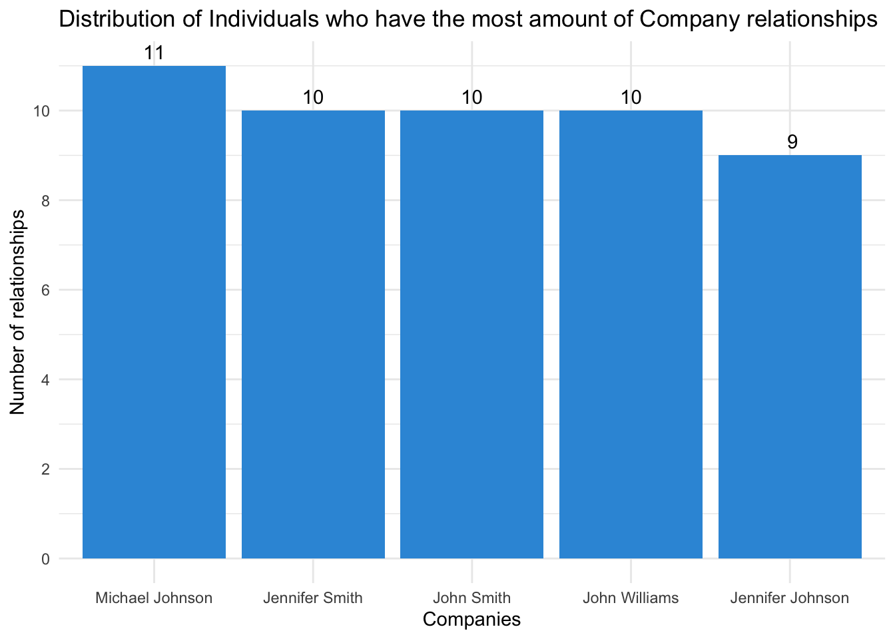
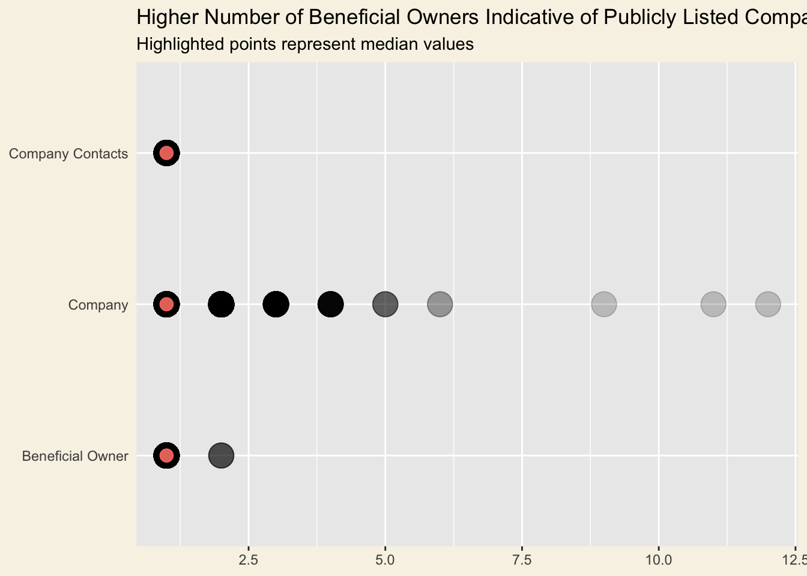
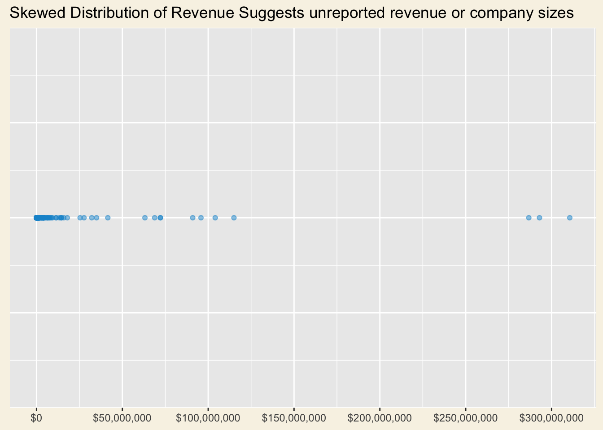

pacman::p_load(jsonlite, tidygraph, tidyverse, ggraph, ggiraph, visNetwork, graphlayouts, ggforce, tidytext, skimr, treemap, ggdist, RColorBrewer)init_doc
mc3_data <- fromJSON("data/MC3.json")mc3_nodes <- as_tibble(mc3_data$nodes) %>%
distinct() %>% # Remove duplicate rows
mutate(country = as.character(country), # Convert to character type
id = as.character(id), # Convert to character type
product_services = as.character(product_services), # Convert to character type
revenue_omu = as.numeric(ifelse(revenue_omu == "Unknown" | revenue_omu == "NULL", 0, revenue_omu)),
type = as.character(type) # Convert to character type
) %>%
select(id,country,type,revenue_omu,product_services)#Extracting edges
mc3_edges_raw <- as_tibble(mc3_data$links) %>%
distinct() %>% # Remove duplicate rows
mutate(source = as.character(source), # Convert to character type
target = as.character(target), # Convert to character type
type = as.character(type)) %>% # Convert to character type
rename(from = source,
to = target) %>% #ensure compatibility with `tidygraph` functions
group_by(from, to, type) %>%
summarise(weights = n()) %>%
filter(from!=to) %>% #to ensure that no record with similar source and target.
ungroup()`summarise()` has grouped output by 'from', 'to'. You can override using the
`.groups` argument.mc3_nodes_group <- mc3_nodes %>% #given some companies/nodes have multiple rows in different countries
group_by(id) %>%
summarize(total_revenue_omu = sum(revenue_omu, na.rm = TRUE))
#Extracting edges
mc3_edges <- mc3_edges_raw %>%
left_join(mc3_nodes_group, by = c("from" = "id")) %>%
select(from, to, type, weights, total_revenue_omu) summary_data <- mc3_edges %>%
group_by(to) %>%
rename(id = to) %>%
summarize(total_revenue_omu = sum(total_revenue_omu, na.rm = TRUE),
companies_owned = sum(type == "Beneficial Owner"),
companies_contact = sum(type == "Company Contacts"),
total_relation = companies_owned+companies_contact)%>%
arrange(desc(total_relation)) #sort total_relation by descendingid1 <- mc3_edges %>% # extract the source column from the edges dataframe and rename it to id1
select(from) %>%
rename(id = from)
id2 <- mc3_edges %>% # extract the target column from the edges dataframe and rename it to id2
select(to) %>%
rename(id = to)
mc3_nodes1 <- rbind(id1, id2) %>% # combine the id1 and id2 dataframes
distinct() %>% # remove the duplicates
left_join(mc3_nodes, by = "id",
unmatched = "drop") %>%
left_join(summary_data, by = "id") %>%
replace_na(list(companies_owned = 0, companies_contact = 0, total_relation = 0))%>% #replace NA values with 0
mutate(new_type = ifelse(companies_owned>0 & companies_contact>0, "Beneficial Owner + Company Contact",ifelse(companies_owned>0 & companies_contact==0, "Beneficial Owner", ifelse(companies_owned==0 & companies_contact>0, "Company Contact",NA_character_)))) %>%
mutate(revenue_omu = ifelse(is.na(revenue_omu), 0, revenue_omu))
#create new attributes for node# create a graph from the nodes and edges dataframes
mc3_graph <- tbl_graph(nodes = mc3_nodes1,
edges = mc3_edges,
directed = FALSE) %>%
mutate(betweenness_centrality = centrality_betweenness(), #additional node attribute
closeness_centrality = ifelse(is.nan(centrality_closeness()),0,centrality_closeness()), #additional node attribute
degree_centrality = centrality_degree()) %>% #additional node attribute
mutate(community = as.factor(group_fast_greedy(weights = weights))) #community measurenodes_df <- mc3_graph %>%
activate(nodes) %>%
as_tibble() %>%
rename(name = id) %>%
mutate(id=row_number())
edges_df <- mc3_graph %>%
activate(edges) %>%
as_tibble()#Manual configuration of the nodes' attribute for graph visualisation
nodes_df2 <- nodes_df %>%
#filter(betweenness_centrality >= quantile(betweenness_centrality, 0.995)) %>%
mutate(color = case_when(
new_type == "Beneficial Owner" ~ "#026873",
new_type == "Company Contact" ~ "#026873",
new_type == "Beneficial Owner + Company Contact" ~ "#026873",
is.na(new_type) ~ "#4B4952",
TRUE ~ "#4B4952"
),
title = paste0("<br><span style='color: black;'><b>",id, ": ", name,"<br></b>","Companies Owned:", companies_owned,"</br>", "Companies Contact to:", companies_contact,"</span><p>"),
label = name)
#size = ifelse(total_relation == 0,10,total_relation*10))
edges_df2 <- edges_df %>%
mutate(color = ifelse(type == 'Beneficial Owner', "#D94F04","#3E7C59")
)0. Export in CSV
write.csv(mc3_nodes1, file = "data/mc3_nodes1.csv")write.csv(mc3_nodes1, file = "data/mc3_nodes2.csv")1.1 Distribution of Count per Top 3 countries Panel Tab 1
export
mc3_nodes1_Other <- mc3_nodes1 %>%
filter(!is.na(country)) %>%
group_by(country) %>%
summarise(counts = n()) %>%
arrange(desc(counts)) %>%
mutate(country = ifelse(row_number() > 3, "Other", country)) %>%
group_by(country) %>%
summarise(counts = sum(counts)) %>%
mutate(counts = as.numeric(counts)) %>%
arrange(desc(counts)) mc3_nodes1_Other %>%
arrange(desc(counts)) %>%
ggplot(aes(x = reorder(country, -counts), y = counts)) +
geom_bar(stat = "identity", fill = '#3498db') +
geom_text(aes(label = format(counts,big.mark=",")), vjust = -0.5) +
theme_minimal() +
labs(x = "Country", y = "Counts",
title = 'Count of Nodes by Country',
subtitle = 'ZH, Oceanus, and Marebak were the top 3 countries where most nodes domiciled') +
theme(axis.title.y = element_text(angle = 0, vjust = 0.5, hjust = 1)) 
1.2 Distribution of Revenue per Top 3 countries Paenl tab 2
mc3_nodes1 %>%
filter(!is.na(country)) %>%
group_by(country) %>%
summarise(revenue_omu = sum(revenue_omu)) %>%
arrange(desc(revenue_omu)) %>%
mutate(country = ifelse(row_number() > 3, "Other", country)) %>%
group_by(country) %>%
summarise(revenue_omu = sum(revenue_omu)) %>%
ggplot(aes(x = reorder(country, -revenue_omu), y = revenue_omu)) +
geom_histogram(stat = "identity", fill = '#3498db') +
geom_text(aes(label = format(revenue_omu,big.mark=",")), vjust = -0.5) +
scale_y_continuous(labels = function(x) format(x/1000000, nsmall = 1, big.mark = ".", decimal.mark = ","))+
theme_minimal() +
labs(x = "Country", y = "Revenue in mil",
title = 'Distribution of Revenue by Country',
subtitle = 'ZH, Rio Isla, and Utoporiana were the top 3 countries where most revenue was generated') +
theme(axis.title.y = element_text(angle = 90, vjust = 0.5, hjust = 1))Warning in geom_histogram(stat = "identity", fill = "#3498db"): Ignoring
unknown parameters: `binwidth`, `bins`, and `pad`
2 Distribution of Company located in multiple countries
mc3_nodes1 %>%
group_by(id) %>%
summarise(total_countries = n_distinct(country)) %>%
filter(total_countries > 3) %>%
arrange(desc(total_countries)) %>%
ggplot(aes(x = id, y = total_countries)) +
geom_bar(stat = "identity", fill = '#3498db') +
geom_text(aes(label = format(total_countries, big.mark=",")), vjust = -0.5) +
theme_minimal() +
labs(x = "Companies", y = "Number of Countries",
title = 'Distribution of Company located in multiple countries',
subtitle = 'Aqua Aura SE Marine is the most diversified in terms of countries locations') +
scale_y_continuous(breaks = seq(0, 10, by = 2),
labels = seq(0, 10, by = 2))
theme(axis.title.y = element_text(angle = 90, vjust = 0.5, hjust = 1)) +
theme(axis.text.x = element_text(angle = 30, hjust = 1, vjust = 1,
size = 10, margin = margin(t = 0.2, r = 0, b = 0, l = 0)))List of 2
$ axis.title.y:List of 11
..$ family : NULL
..$ face : NULL
..$ colour : NULL
..$ size : NULL
..$ hjust : num 1
..$ vjust : num 0.5
..$ angle : num 90
..$ lineheight : NULL
..$ margin : NULL
..$ debug : NULL
..$ inherit.blank: logi FALSE
..- attr(*, "class")= chr [1:2] "element_text" "element"
$ axis.text.x :List of 11
..$ family : NULL
..$ face : NULL
..$ colour : NULL
..$ size : num 10
..$ hjust : num 1
..$ vjust : num 1
..$ angle : num 30
..$ lineheight : NULL
..$ margin : 'margin' num [1:4] 0.2points 0points 0points 0points
.. ..- attr(*, "unit")= int 8
..$ debug : NULL
..$ inherit.blank: logi FALSE
..- attr(*, "class")= chr [1:2] "element_text" "element"
- attr(*, "class")= chr [1:2] "theme" "gg"
- attr(*, "complete")= logi FALSE
- attr(*, "validate")= logi TRUE3 Distribution of Individuals who own the most of amount of companies
mc3_nodes1 %>%
group_by(id) %>%
filter(total_relation > 8) %>%
arrange(desc(total_relation)) %>%
ggplot(aes(reorder(x = id, -total_relation), y = total_relation)) +
geom_bar(stat = "identity", fill = '#3498db') +
geom_text(aes(label = format(total_relation, big.mark=",")), vjust = -0.5) +
theme_minimal() +
labs(x = "Companies", y = "Number of relationships",
title = 'Distribution of Individuals who have the most amount of Company relationships') +
scale_y_continuous(breaks = seq(0, 10, by = 2),
labels = seq(0, 10, by = 2))
theme(axis.title.y = element_text(angle = 90, vjust = 0.5, hjust = 1)) +
theme(axis.text.x = element_text(angle = 30, hjust = 1, vjust = 1,
size = 10, margin = margin(t = 0.2, r = 0, b = 0, l = 0)))List of 2
$ axis.title.y:List of 11
..$ family : NULL
..$ face : NULL
..$ colour : NULL
..$ size : NULL
..$ hjust : num 1
..$ vjust : num 0.5
..$ angle : num 90
..$ lineheight : NULL
..$ margin : NULL
..$ debug : NULL
..$ inherit.blank: logi FALSE
..- attr(*, "class")= chr [1:2] "element_text" "element"
$ axis.text.x :List of 11
..$ family : NULL
..$ face : NULL
..$ colour : NULL
..$ size : num 10
..$ hjust : num 1
..$ vjust : num 1
..$ angle : num 30
..$ lineheight : NULL
..$ margin : 'margin' num [1:4] 0.2points 0points 0points 0points
.. ..- attr(*, "unit")= int 8
..$ debug : NULL
..$ inherit.blank: logi FALSE
..- attr(*, "class")= chr [1:2] "element_text" "element"
- attr(*, "class")= chr [1:2] "theme" "gg"
- attr(*, "complete")= logi FALSE
- attr(*, "validate")= logi TRUEChart from Hailey’s
# Get number of type by source (Company)
nodes_count <- mc3_nodes %>%
group_by(id, type) %>%
summarise(count = n()) %>%
ungroup()`summarise()` has grouped output by 'id'. You can override using the `.groups`
argument.# Plot strip chart to show distibution
nodes_count %>%
ggplot(
aes(x = count,
y = type)
) +
geom_point(
alpha = .2,
size = 7
) +
scale_x_continuous() +
stat_summary(
color = "salmon",
fun = "median",
geom = "point",
size = 3.5,
alpha = .9
) +
labs(title = "Higher Number of Beneficial Owners Indicative of Publicly Listed Companies",
subtitle = "Highlighted points represent median values",
x = NULL,
y = NULL
) +
theme(axis.ticks.y = element_blank(),
plot.background = element_rect(fill="#F8F3E6",colour="#F8F3E6")
)
#From Hailey’s
# Only feature data from Companies
company_nodes <- mc3_nodes1 %>%
filter(type == "Company")
company_rev <-
ggplot(company_nodes,
aes(x = 1,
y = revenue_omu)
) +
geom_point(
color = "#1696d2",
alpha = .5
) +
scale_y_continuous(
breaks = scales::pretty_breaks(n=5),
labels = scales::dollar
) +
labs(
title = "Skewed Distribution of Revenue Suggests unreported revenue or company sizes"
) +
theme(
axis.ticks.y = element_blank(),
axis.title = element_blank(),
axis.text.y = element_blank(),
plot.background = element_rect(fill="#F8F3E6",colour="#F8F3E6")
) +
coord_flip()
company_rev
3. summary of summary data
summary_data2 <- summary_data %>%
filter(total_relation>1)
skim(summary_data2) | Name | summary_data2 |
| Number of rows | 1962 |
| Number of columns | 5 |
| _______________________ | |
| Column type frequency: | |
| character | 1 |
| numeric | 4 |
| ________________________ | |
| Group variables | None |
Variable type: character
| skim_variable | n_missing | complete_rate | min | max | empty | n_unique | whitespace |
|---|---|---|---|---|---|---|---|
| id | 0 | 1 | 7 | 22 | 0 | 1962 | 0 |
Variable type: numeric
| skim_variable | n_missing | complete_rate | mean | sd | p0 | p25 | p50 | p75 | p100 | hist |
|---|---|---|---|---|---|---|---|---|---|---|
| total_revenue_omu | 0 | 1 | 827480.44 | 9794417.74 | 0 | 0 | 25094.85 | 118683.8 | 286860134 | ▇▁▁▁▁ |
| companies_owned | 0 | 1 | 1.68 | 0.96 | 0 | 1 | 2.00 | 2.0 | 9 | ▆▇▁▁▁ |
| companies_contact | 0 | 1 | 0.73 | 0.76 | 0 | 0 | 1.00 | 1.0 | 5 | ▇▁▁▁▁ |
| total_relation | 0 | 1 | 2.41 | 0.92 | 2 | 2 | 2.00 | 3.0 | 11 | ▇▁▁▁▁ |